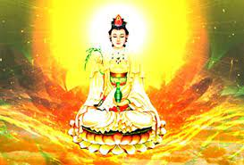

| Người làm | Lớp | Quê |
|---|---|---|
| Lại Hoàng Tùng | CNTT6-K15 | Hà Nam |
Chùa Một Cột gọi theo ngữ Hán – Việt là Nhất Trụ Tháp hay Chùa Mật. Chùa còn có các tên gọi khác là Diên Hựu Tự hoặc Liên Hoa Đài. Ngôi chùa nằm trên con phố cùng tên thuộc Quận Ba Đình, Hà Nội. Không chỉ được đánh giá là ngôi chùa có kiến trúc nghệ thuật độc nhất ở Việt Nam cũng như châu Á, chùa Một Cột còn là điểm đến tâm linh, biểu tượng văn hóa ngàn năm của Hà Nội.
Xem thêm: Khám phá vẻ đẹp kiến trúc độc đáo Nhà thờ lớn Hà Nội

Chùa Một Cột – Kiến trúc nghệ thuật độc nhất châu Á (Ảnh: ST)
Chùa Một Cột được khởi công xây dựng vào năm Kỷ Sửu 1049, dưới thời vua Lý Thái Tông. Theo truyền thuyết dân gian, trong một giấc chiêm bao vua Lý Thái Tông đã mơ thấy Phật bà Quan Âm đang tọa trên đài sen tỏa ánh hào quang và mời nhà vua lên cùng. Tỉnh giấc chiêm bao nhà vua liền kể với bề tôi. Nhà sư Thiền Tuệ khuyên vua nên dựng chùa trên trụ đá y như trong giấc mơ, làm tòa sen để Phật bà ngự ở trên.

Chùa Diên Hựu, một tên gọi khác của chùa Một Cột (Ảnh: ST)
Trong sử sách có chép lại tại vị trí chùa Một Cột bây giờ có một cột đá phía trên có ngôi lầu ngọc, trong lầu ngọc có tượng Phật Quan Âm đã được dựng ở hồ nước vuông. Nhà vua thường lui tới tụng kinh niệm phật, cầu nguyện. Sau hoàng tử nối dõi tu sửa lại thành chùa và dựng thêm một ngôi chùa bên cạnh cách 10 m về phía Tây Nam. Cụm di tích này được đặt tên Diên Hựu Tự với mong muốn “phước lành dài lâu”.
Phật bà Quan Âm trên đài sen (Ảnh: ST)
Năm 1105 vua Lý Nhân Tông cho tu sửa chùa và dựng thêm trước sân hai tháp lợp sứ trắng. Đến năm 1108 Nguyên Phi Ỷ Lan sai người đúc một chiếc chuông lớn đặt tên là “Giác thế chung” với ý nghĩa thức tỉnh lòng thế nhân.